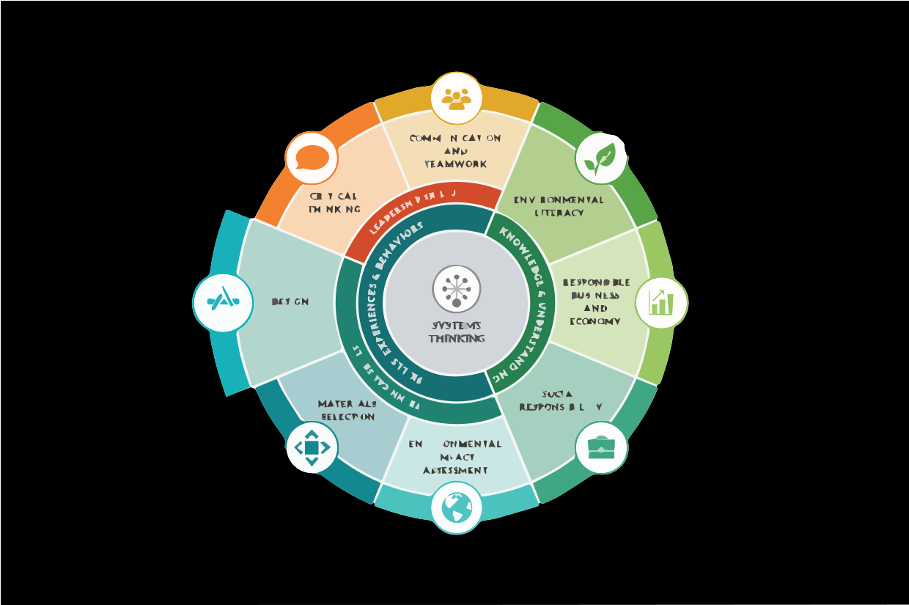

Case Studies
Real-world applications of sustainability principles in engineering curricula and practice.
ExploreEngineering for One Planet (EOP) is an education movement that embeds sustainability across engineering so every graduate can design solutions that protect people and the planet. The EOP Framework offers a faculty-vetted set of adaptable learning outcomes spanning environmental, social, and economic dimensions along with professional skills like teamwork and communication, that programs can integrate in any discipline and map to accreditation expectations.
This independent resource hub introduces the EOP approach, highlights future case studies and projects, and curates industry perspectives. Explore the tabs and check back as we add content.
Browse Case Studies
Real-world applications of sustainability principles in engineering curricula and practice.
ExploreHands-on activities and course projects aligned with EOP learning outcomes.
ExplorePerspectives from employers on skills and mindsets needed for sustainable engineering.
ExploreConversations with faculty, students, and industry leaders advancing EOP-aligned change.
Explore